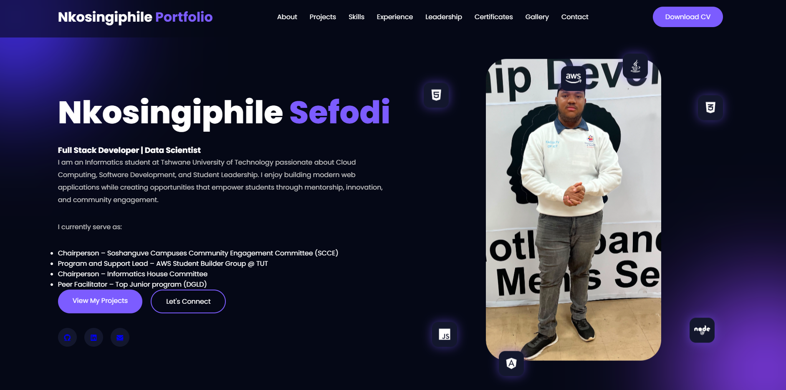

A collection of personal, academic and learnership projects built throughout my journey in software development and data science.

My personal portfolio website built from scratch — showcasing projects, skills, experience, leadership and my full professional journey. Fully responsive with animations and a custom design.
An academic project completed as part of my Informatics studies at Tshwane University of Technology. Focused on building and structuring a responsive web-based solution following academic requirements and standards.
A budgeting web application built during my Systems Development learnership at Kasi Digital. Tracks income and expenses, helping users manage and visualise their personal finances.
A food-related web application developed during my Systems Development learnership at Kasi Digital. Built to explore dynamic UI development, DOM manipulation and application structure using JavaScript.
A collection of machine learning and data science work completed during my NQF 5 Data Science learnership at Axplore AI Academy. Covers classification, regression, data analysis and Python-based AI exercises across multiple repositories.